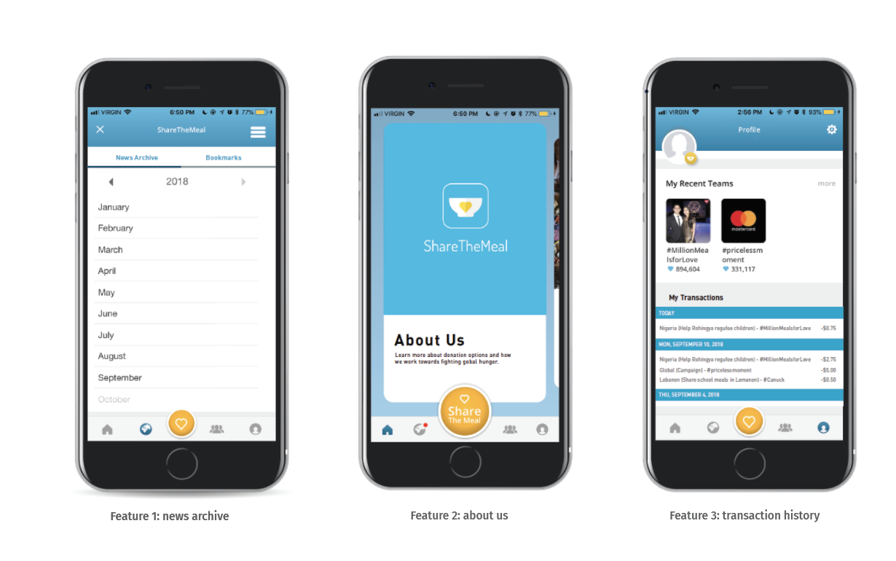
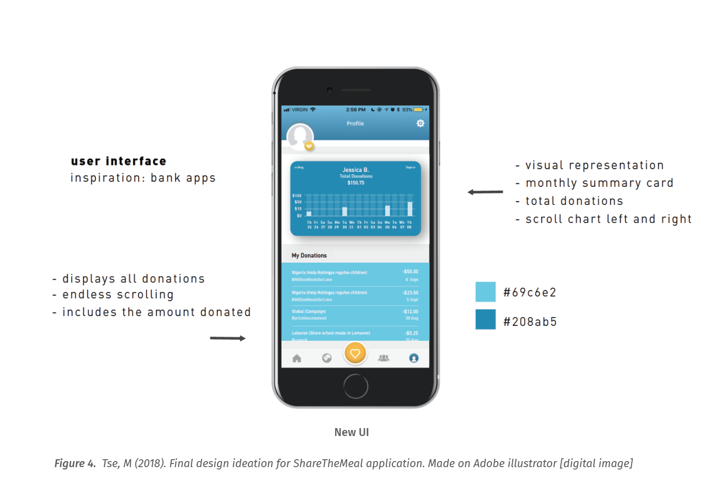

Project Brief: Add a feature to an existing app. Solo Project. 5 weeks.
ShareTheMeal is an initiative of the united Nations World Food Programme (WFP) which uses a smartphone application to crowdfund to fight global hunger. This project spanned over two weeks — week one consisted of researching the application’s existing interface, interaction patterns, features, and users. Week two consisted of the final goal of developing a new feature to implement into the application.
As an individual project, I was responsible for the research and analysis of the application for the intended users. I did this by running a user testing session to help myself understand what was working or not with the current ShareTheMeal application. Most of the questions during my session were task based. Some of the tasks include:
I observed five participant’s actions and asked them to orally explain their actions along the way. This provided me with enough insight to spot areas of the application that can be improved. I then started my ideation process and came up with three new features
Week two focused on the refinement of one idea and I move forward with feature 3: transaction history (see figure 4). I chose this feature because since this application revolved around money, I believed that it would help create a secure environment for the user while being able to track all their expenses.
The challenges I faced during my ideation process were based on the restriction of designing consistently to the interaction patterns of the application. ShareTheMeal originally focuses on tap and swipes navigations, but my idea of implementing a transaction history was inspired by banking applications, which is navigated through a scrolling movement. After trying to implement a tap or swipe movement instead, I realized that I gave myself a false constraint. The scrolling movement was the best option as it is familiar to the user and will be easier for them to apply recognition rather than recall (Budiu, 2014, para. 2).